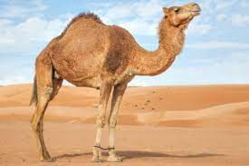

Habitad

Los camellos viven en zonas áridas pedregosas con vegetación y recursos hídricos muy limitados del inhóspito desierto de Gobi, en Asia Central. En invierno se encuentran a lo largo de los ríos de la estepa, pero se dispersan hacia el desierto cuando la nieve se derrite en primavera.
Caracteristicas
Su esperanza de vida está en torno a los 40 a 50 años
- Un camello adulto mide 1,85M
- La joroba sobresale unos 75 cm
- Los camellos pueden correr a 65 km/h en carreras cortas y mantener una velocidad de 40 km/h.
- Los camellos tienen pies anchos, planos, la planta como cuero y con dos dedos en cada pie
menú